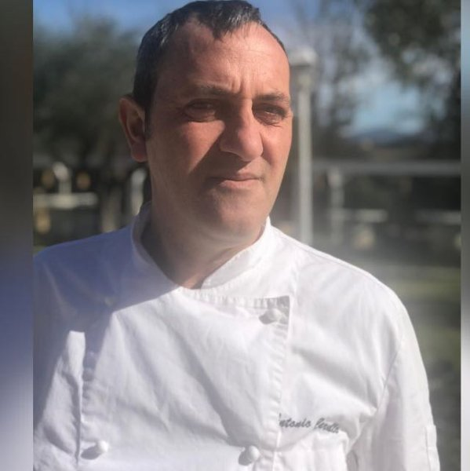

Un ottimo cuoco non sa fare campagne. Un maitre non conosce i numeri. Un direttore non gestisce la cucina. Ristoflow.AI colma tutti questi gap — in un'unica piattaforma semplice come un menu.
E non è colpa loro. È la natura di questo mestiere. Ristoflow.AI riempie i vuoti che nessuno vuole ammettere.
Ma non sa fare una campagna WhatsApp, leggere un P&L o calcolare il food cost esatto di ogni piatto.
Ma non sa organizzare la produzione in cucina, gestire i turni del personale o analizzare i margini per tavolo.
Ma non sempre sa curare il marketing digitale, costruire catenarie WhatsApp o leggere i dati di Google Analytics.
Ma non ha tempo per stare dietro a 7 software diversi che non si parlano tra loro.
Gli altri gestionali sono stati progettati da ingegneri per ingegneri. Ristoflow.AI è stato progettato da un ristoratore per ristoratori.
Niente manuali di 200 pagine. Niente corsi di formazione da 3 giorni. Niente consulenti esterni per fare una semplice modifica.
Prenotazioni, ordini, preferenze, storico visite, fidelity, WhatsApp — tutto si collega automaticamente. Costruisci relazioni durature senza fare nulla di extra.
Ogni prenotazione arricchisce il profilo: preferenze, allergie, occasioni speciali, frequenza di visita.
CRMInvia messaggi mirati ai clienti che non vengono da 30 giorni, agli habitué, a chi ha prenotato per il compleanno.
MarketingPunti, premi e offerte personalizzate che si attivano senza che tu debba fare niente manualmente.
MarketingSai esattamente quanto vale ogni cliente nel tempo. Investi di più su chi porta più valore.
AnalyticsMessaggi automatici dopo ogni visita: "Come è andata?", recensione Google, offerta per il ritorno.
AutomazioneOgni promo, ogni QR code, ogni landing page alimenta il tuo CRM con nuovi contatti qualificati.
CRMRistoflow.AI non è un software — è un ecosistema completo per gestire ogni aspetto della tua attività.
Il cuore della piattaforma. Comande, food cost, magazzino, HR, prenotazioni, WhatsApp e Tony AI per ristoranti e catering.
Ristorante & CateringPlanning camere, booking online con Stripe, check-in digitale, operazioni quotidiane e gestione ospiti. Tutto dal browser.
Hotel & B&BVendi biglietti per serate degustazione, feste e eventi. Gestisci ingressi, consumazioni e pacchetti con QR code.
Tasting & EventiIl social network della ristorazione italiana. Condividi momenti, ricette, offerte di lavoro e recensioni con la community.
Social NetworkOgni funzione nasce da un problema vero, vissuto nei nostri locali. Queste sono le ultime arrivate.
La matrice Star, Plowhorse, Puzzle e Dog sul tuo menù reale: quali piatti spingere, quali riprezzare, quali togliere. Con prezzo suggerito e margine recuperabile. L'analisi da consulente, automatica.
Le ricette sono collegate al magazzino: quando cambia il prezzo della farina, cambia il costo della pizza. Lo scarico avviene da solo a ogni vendita. Il margine lo vedi mentre succede, non a fine mese.
Job description generate dall'AI sulla tua identità, manuali operativi per ruolo, valutazioni, ferie e permessi con approvazione in un tap, e una sentinella che ogni settimana ti avvisa su WhatsApp se qualcosa non torna.
Coupon unici con QR per ogni cliente, tracking Meta Pixel, catenarie WhatsApp post-visita. Sai esattamente quanto ha reso ogni campagna, cliente per cliente.
Risponde ai clienti, raccoglie richieste di prenotazione e cattura lead anche quando il locale è chiuso. Versione dedicata per hotel con raccolta dati ospite completa.
La lista "da riordinare" si compila da sola dai consumi. Approvi con un tap, l'ordine parte al fornitore via WhatsApp, e la merce la ricevi scansionando il barcode.
Un'agenzia parte da 1.500–5.000€, ti intervista un'ora e poi scrive di un locale che non ha mai visto. Ristoflow il tuo locale lo conosce già: i piatti, gli orari, le foto, e soprattutto la tua identità — il perché, i valori, il tono.
Il sito viene generato dal profilo del tuo locale: la tua storia, la tua filosofia, il tuo menù. Non un template anonimo — la tua voce.
"Tony, metti sul sito che ad agosto chiudiamo dal 10 al 20." Fatto. Niente agenzia da chiamare, niente preventivi per cambiare una riga.
Sul mercato un sito così parte da 2.500€ più la manutenzione. Nei piani completi Ristoflow è compreso: la tua storia online, zero costi extra.
Per avere quello che fa Ristoflow dovresti comprare — e far parlare tra loro — almeno otto strumenti e servizi diversi. Prezzi tipici di mercato:
Un locale da 30.000€ di incasso al mese: recuperare anche solo 2 punti di food cost vale 600€ al mese. Il piano completo si ripaga da solo tre volte — prima ancora di contare le ore risparmiate, le promo che riportano i clienti e il tavolo in più riempito dal chatbot.
Circa un decimo della spesa. E ogni pezzo conosce gli altri: la prenotazione alimenta il CRM, la vendita scarica il magazzino, il magazzino aggiorna il food cost.
Stime indicative di mercato per strumenti e servizi equivalenti acquistati singolarmente.
Crea il tuo account in 2 minuti e inizia subito. Se dopo 30 giorni non ti ha cambiato la vita, nessun problema — non paghi niente.
Nessuna carta di credito · Accesso immediato · Supporto WhatsApp incluso

Antonio Carullo — fondatore di Ristoflow.AI, in cucina a Campo Antico Ricevimenti.
Ristoflow.AI è nato mentre gestivo 4 sedi contemporaneamente, cercavo un software che capisse davvero i problemi della ristorazione e non lo trovavo da nessuna parte.
I gestionali esistenti erano troppo complicati, troppo generici o troppo costosi. Nessuno era stato costruito da qualcuno che avesse mai gestito un servizio da 200 coperti un sabato sera.
Così l'ho costruito io. Funzione per funzione, problema per problema, errore per errore — testato ogni giorno nelle mie cucine prima di essere rilasciato.
"Ogni funzione di Ristoflow.AI risponde a un problema reale che ho vissuto in prima persona. Non è teoria — è esperienza messa in codice."
— Antonio, Fondatore Ristoflow.AI & Titolare Campo Antico RicevimentiUn consulente esperto di ristorazione ti costerebbe €500 all'ora. Tony AI è disponibile 24/7, conosce i tuoi dati in tempo reale e parla come un essere umano — non come un software.
Ogni locale è diverso: una trattoria non è un hotel, un hotel non è una location per eventi. Per questo c'è un prezzo chiaro per partire — e un piano cucito sui tuoi numeri per tutto il resto.
30 giorni gratis. Nessuna carta di credito. Nessun ingegnere richiesto.